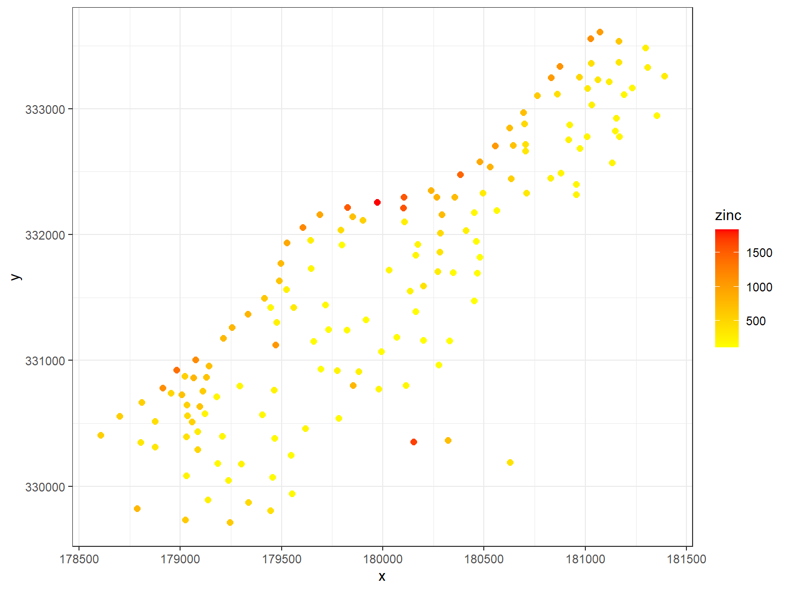
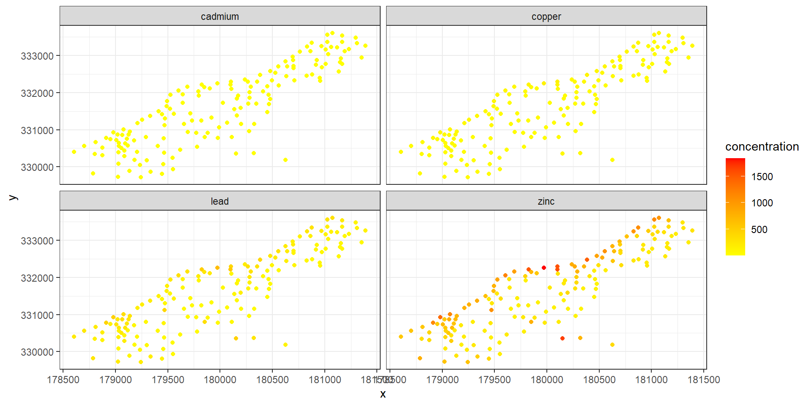
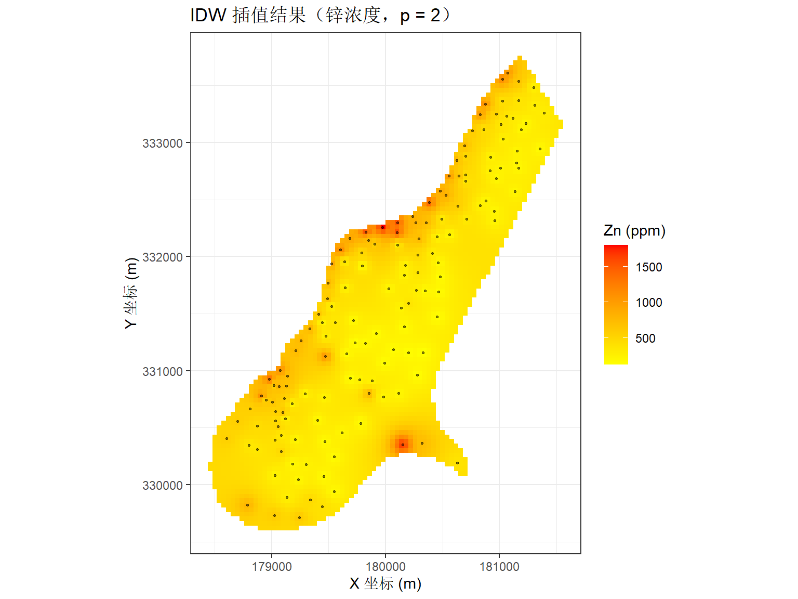
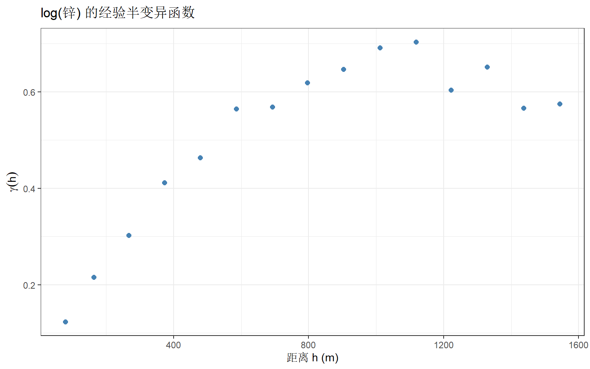
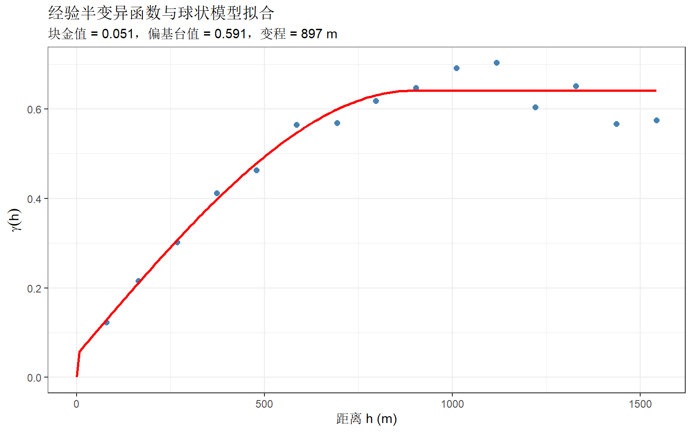
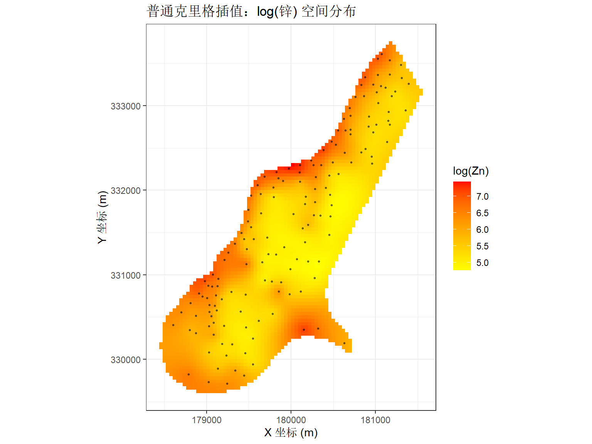
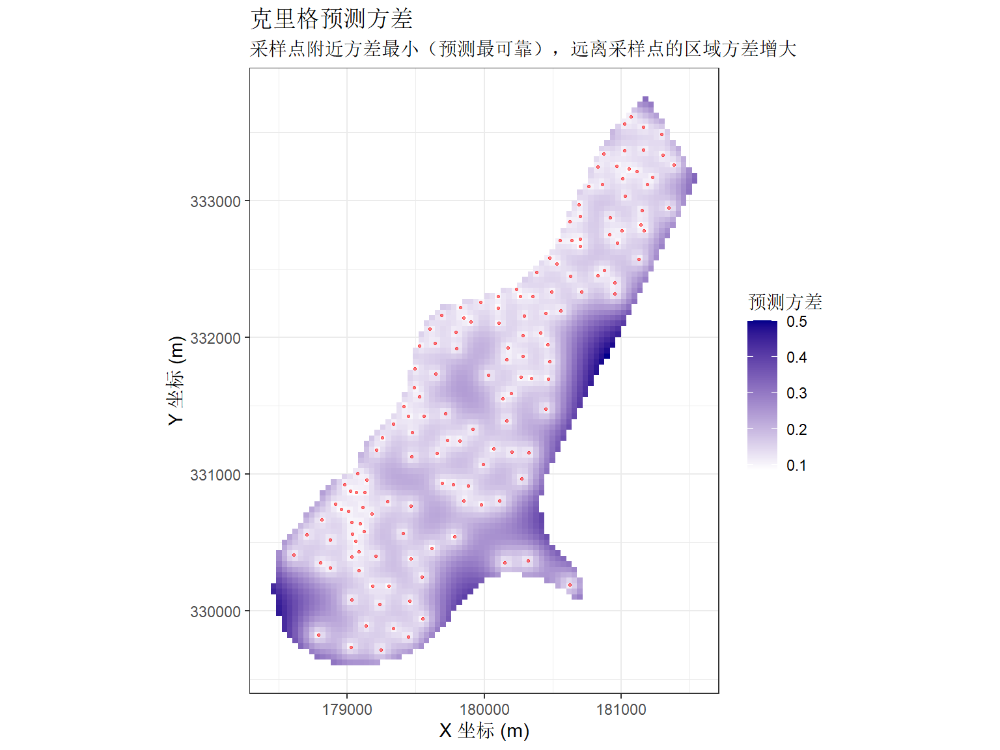
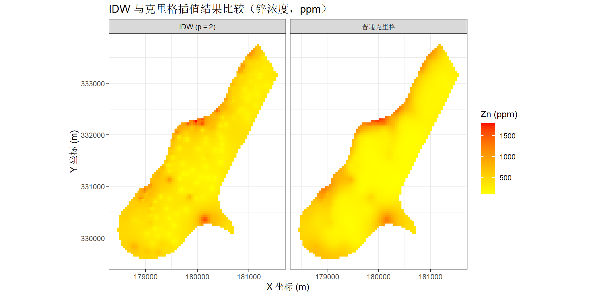

Code
library(sp)
library(gstat)
library(ggplot2)
library(dplyr)
library(tidyr)
# 加载 meuse 数据
data(meuse)
data(meuse.grid)土壤调查通常只能在有限的位置采样，但科学研究和环境管理需要了解整个区域的土壤属性分布。这引出了一个核心问题：如何从离散的采样点推测出连续的空间分布面？
本章使用经典土壤重金属数据集 meuse，介绍两种最常用的空间插值方法：
两种方法各有适用场景，理解其原理和差异是空间数据分析的基础。
Meuse 河（荷兰语称 Maas，马斯河）发源于法国东北部，流经比利时，最终在荷兰汇入莱茵河。19 世纪以来，比利时和法国北部的采矿与冶金工业持续将富含重金属的废水排入河中。Meuse 河中游流经比利时列日（Liège）等老工业区，锌、镉、铜、铅等重金属随河水输送至下游。
每逢洪水季节，河水携带的重金属随悬浮泥沙漫过堤岸，沉积在下游泛滥平原的土壤中。日积月累，荷兰林堡省（Limburg）Stein 村附近的河岸土壤积累了异常高浓度的重金属，对农业生产和生态环境构成了潜在风险。
1980 年代末至 1990 年代初，荷兰土壤科学研究者对该区域进行了系统的土壤采样，记录了 155 个采样点的空间坐标（x, y）及表层土壤中多种重金属的浓度。该数据随后由 Edzer Pebesma 教授整理并纳入其开发的 gstat 包，成为地质统计学教学中沿用至今的经典示例数据集。
meuse 数据集成为了解空间插值方法的理想素材，原因有三：
library(sp)
library(gstat)
library(ggplot2)
library(dplyr)
library(tidyr)
# 加载 meuse 数据
data(meuse)
data(meuse.grid)在插值之前，先通过散点图观察采样点的空间分布和重金属浓度的总体格局。这一步有助于形成对数据的直观认识。
# 采样点空间分布——颜色深浅表示锌浓度
ggplot(meuse, aes(x = x, y = y, color = zinc)) +
geom_point(size = 2) +
scale_color_gradient(low = "yellow", high = "red") +
theme_bw()
从图中可见，锌浓度较高的点主要集中在河流附近（图的下方）。这一空间趋势——靠近河流处浓度偏高——是 Meuse 河泛滥平原的典型特征：洪水携带的重金属在河岸沉积。
# 将多种重金属数据转换为长格式以便分面绘制
meuse_long <- meuse %>%
select(x, y, cadmium, copper, lead, zinc) %>%
pivot_longer(
cols = c(cadmium, copper, lead, zinc),
names_to = "metal",
values_to = "concentration"
)
ggplot(meuse_long, aes(x = x, y = y, color = concentration)) +
geom_point(size = 1.5) +
scale_color_gradient(low = "yellow", high = "red") +
facet_wrap(~ metal, nrow = 2) +
theme_bw()
四种重金属（镉、铜、铅、锌）的空间分布格局高度相似，均表现为靠近河流的高浓度区域。这提示它们可能具有共同的污染源（河流沉积）。
插值需要在规则网格点上预测土壤属性值。meuse 数据集的配套文件 meuse.grid 提供了预定义的 40 m × 40 m 分辨率网格，且已按照研究区边界裁剪。
# meuse.grid 已包含预定义的规则网格
coordinates(meuse) <- ~ x + y
coordinates(meuse.grid) <- ~ x + y
gridded(meuse.grid) <- TRUE
cat("网格点数：", nrow(meuse.grid), "\n")网格点数： 3103 说明：meuse.grid 的空间范围与采样点所在的研究区一致，并非矩形外框，因此后续插值结果会自动限制在有效区域内，无需额外裁剪。
反距离加权插值是最直观的确定性插值方法。其核心假设是：离预测点越近的已知点，对预测值的影响越大。这是一个符合直觉的假设——在大多数自然过程中，空间上靠近的两点通常比相距遥远的两点更相似。
对于待预测位置 \((x_0, y_0)\)，IDW 的预测值为所有已知采样点观测值的加权平均：
\[ \hat{z}(x_0, y_0) = \frac{\sum_{i=1}^{n} w_i \cdot z_i}{\sum_{i=1}^{n} w_i} \]
其中权重 \(w_i\) 是距离的递减函数：
\[ w_i = \frac{1}{d_i^{\,p}} \]
各符号的含义：
幂参数 \(p\) 是 IDW 方法中唯一的超参数，决定了距离对权重的影响程度：
\(p\) 值越大，近处样本点的话语权越重，插值面越不光滑。
使用 gstat 包中的 idw() 函数进行反距离加权插值。此处采用 \(p = 2\) 作为幂参数。
# IDW 插值（p = 2）
idw_result <- idw(
zinc ~ 1, # 公式：~1 表示仅由截距项描述（简单 IDW）
locations = meuse, # 已知采样点（SpatialPointsDataFrame）
newdata = meuse.grid, # 预测网格（SpatialPixelsDataFrame）
idp = 2 # 幂参数 p
)[inverse distance weighted interpolation]# 查看前几行预测结果
head(idw_result@data) var1.pred var1.var
1 633.6864 NA
2 712.5450 NA
3 654.1617 NA
4 604.4422 NA
5 857.2558 NA
6 755.5061 NA# 可视化 IDW 插值结果
idw_df <- as.data.frame(idw_result)
ggplot(idw_df, aes(x = x, y = y, fill = var1.pred)) +
geom_tile() +
scale_fill_gradient(low = "yellow", high = "red") +
geom_point(
data = as.data.frame(meuse),
aes(x = x, y = y),
inherit.aes = FALSE,
size = 0.5,
color = "black",
alpha = 0.5
) +
labs(
title = "IDW 插值结果（锌浓度，p = 2）",
x = "X 坐标 (m)",
y = "Y 坐标 (m)",
fill = "Zn (ppm)"
) +
coord_fixed() +
theme_bw()
IDW 插值结果清晰地呈现了锌浓度从河流向外递减的空间趋势。然而，IDW 存在一个明显的局限性：它仅依赖距离信息分配权重，完全忽略了数据的空间结构——换言之，IDW 不知道”两个很近的采样点可能提供冗余信息”这一事实。
在 IDW 中，两个采样点获得多大的权重仅取决于它们各自到预测点的距离。设想以下情形：两个采样点几乎重叠在同一个位置，IDW 会给它们各自分配几乎相同的、很高的权重（因为它们都很近）。但实际上，这两个点提供了几乎完全相同的信息——将权重同时给两者，等于对同一份信息进行了双重计算。
克里格（Kriging）的核心改进在于：权重不仅取决于距离，还取决于采样点之间的空间自相关结构。如果两个采样点高度相关，克里格会在计算权重时自动降低它们各自的冗余贡献。这一特性使得克里格在理论上是最优线性无偏估计（Best Linear Unbiased Predictor, BLUP）。
克里格的基础工具是半变异函数（semivariogram），它用于量化”相隔一定距离的两个点有多相似”。
经验半变异函数的计算公式为：
\[ \gamma(h) = \frac{1}{2N(h)} \sum_{i=1}^{N(h)} \left[z(x_i) - z(x_i + h)\right]^2 \]
各符号含义：
直觉解释：如果两点距离很近，它们的观测值通常差异很小，因此 \(\gamma(h)\) 也小；随着距离增大，差异逐渐增大直至不再相关，\(\gamma(h)\) 也趋于平稳。半变异函数从数学上刻画了这一直觉。
理论变异函数模型通常包含三个参数，它们共同描述了空间变异的结构特征：
| 参数 | 英文 | 符号 | 地质统计学含义 |
|---|---|---|---|
| 块金值 | Nugget | \(c_0\) | 距离趋近于零时的半方差。由测量误差或小于采样间距的微观变异造成 |
| 偏基台值 | Partial Sill | \(c\) | 由空间自相关结构解释的变异分量 |
| 变程 | Range | \(a\) | 空间自相关的有效距离。超过此距离后，两点不再具有相关性 |
块金值与偏基台值之和称为基台值（Sill），即 \(c_0 + c\)，代表系统的总变异。
# 计算 log(锌) 的经验半变异函数
# 使用对数变换是因为重金属浓度通常近似服从对数正态分布
v_emp <- variogram(log(zinc) ~ 1, data = meuse)
# 绘制经验半变异函数
ggplot(v_emp, aes(x = dist, y = gamma)) +
geom_point(size = 2, color = "steelblue") +
labs(
title = expression("log(锌) 的经验半变异函数"),
x = "距离 h (m)",
y = expression(gamma(h))
) +
theme_bw()
图中每个点代表一个距离区间内所有点对的平均半方差。半方差随着距离增大先上升后趋于平缓——这正是空间自相关的典型表现。
# 拟合理论变异函数模型（球状模型）
v_fit <- fit.variogram(v_emp, model = vgm(1, "Sph", 900, 0.1))
# 输出拟合参数
print(v_fit) model psill range
1 Nug 0.05066243 0.0000
2 Sph 0.59060780 897.0209# 构造拟合曲线用于绘图
dist_range <- seq(0, max(v_emp$dist), length.out = 200)
pred_line <- variogramLine(v_fit, dist_vector = dist_range)
ggplot() +
geom_point(data = v_emp, aes(x = dist, y = gamma),
size = 2, color = "steelblue") +
geom_line(data = pred_line, aes(x = dist, y = gamma),
color = "red", linewidth = 1) +
labs(
title = "经验半变异函数与球状模型拟合",
subtitle = paste0(
"块金值 = ", round(v_fit$psill[1], 3),
"，偏基台值 = ", round(v_fit$psill[2], 3),
"，变程 = ", round(v_fit$range[2], 0), " m"
),
x = "距离 h (m)",
y = expression(gamma(h))
) +
theme_bw()
拟合结果中，红色曲线为球状模型（Spherical model）的理论半变异函数。球状模型的特点是在变程处以平滑的方式趋近基台值，是土壤科学中最常用的变异函数模型之一。从拟合参数可知，该区域 log(锌) 的空间自相关范围约为 897 m。
有了变异函数模型之后，即可进行克里格插值。与 IDW 形式相似，普通克里格（Ordinary Kriging）的预测值也是已知观测值的加权平均：
\[ \hat{z}(x_0) = \sum_{i=1}^{n} \lambda_i \cdot z(x_i) \]
但关键区别在于权重的确定方式：IDW 的权重仅由距离按反幂函数机械算出；克里格的权重 \(\lambda_i\) 通过求解一个线性方程组得到，该方程组由变异函数模型构建，约束条件为”预测误差的方差最小”。
克里格同时输出两个图层：预测值和预测方差。后者是 IDW 无法提供的信息。
# 普通克里格插值
kriging_result <- krige(
log(zinc) ~ 1, # ~1 表示普通克里格（无外部趋势）
locations = meuse, # 已知采样点
newdata = meuse.grid, # 预测网格
model = v_fit # 拟合的变异函数模型
)[using ordinary kriging]head(kriging_result@data) var1.pred var1.var
1 6.499624 0.3198084
2 6.622356 0.2520205
3 6.505166 0.2729855
4 6.387590 0.2955290
5 6.764492 0.1779424
6 6.635513 0.2022045krige_df <- as.data.frame(kriging_result)
# 克里格预测值（log 尺度）
ggplot(krige_df, aes(x = x, y = y, fill = var1.pred)) +
geom_tile() +
scale_fill_gradient(low = "yellow", high = "red") +
geom_point(
data = as.data.frame(meuse),
aes(x = x, y = y),
inherit.aes = FALSE,
size = 0.5,
color = "black",
alpha = 0.5
) +
labs(
title = "普通克里格插值：log(锌) 空间分布",
x = "X 坐标 (m)",
y = "Y 坐标 (m)",
fill = "log(Zn)"
) +
coord_fixed() +
theme_bw()
# 克里格预测方差
ggplot(krige_df, aes(x = x, y = y, fill = var1.var)) +
geom_tile() +
scale_fill_gradient(low = "white", high = "darkblue") +
geom_point(
data = as.data.frame(meuse),
aes(x = x, y = y),
inherit.aes = FALSE,
size = 0.5,
color = "red",
alpha = 0.5
) +
labs(
title = "克里格预测方差",
subtitle = "采样点附近方差最小（预测最可靠），远离采样点的区域方差增大",
x = "X 坐标 (m)",
y = "Y 坐标 (m)",
fill = "预测方差"
) +
coord_fixed() +
theme_bw()
预测方差图是克里格方法独有的输出。采样点位置附近的预测方差最小（图中浅色区域），说明这些位置的预测值可信度高；而远离采样点的边缘区域预测方差较大（深色），反映了预测的不确定性。这一信息对优化采样设计具有直接的指导意义——方差大的区域即为需要补充采样的候选位置。
# 将克里格预测值反向变换至原始 Zn 浓度尺度
krige_df$zinc_pred <- exp(krige_df$var1.pred)
# 构造并排比较数据框
idw_df$method <- "IDW (p = 2)"
krige_compare <- data.frame(
x = krige_df$x,
y = krige_df$y,
var1.pred = krige_df$zinc_pred,
method = "普通克里格"
)
compare_df <- rbind(
idw_df[, c("x", "y", "var1.pred", "method")],
krige_compare
)
ggplot(compare_df, aes(x = x, y = y, fill = var1.pred)) +
geom_tile() +
scale_fill_gradient(low = "yellow", high = "red") +
facet_wrap(~ method, nrow = 1) +
labs(
title = "IDW 与克里格插值结果比较（锌浓度，ppm）",
x = "X 坐标 (m)",
y = "Y 坐标 (m)",
fill = "Zn (ppm)"
) +
coord_fixed() +
theme_bw()
两种方法的总体趋势一致——高浓度区域集中在河流附近。但克里格插值面通常更为平滑、过渡更自然。这是因为克里格通过变异函数明确了空间自相关的有效范围（变程），从而在权重分配时正确处理了采样点之间的冗余信息。
| 特性 | IDW | 克里格 |
|---|---|---|
| 分类 | 确定性插值 | 地质统计学插值 |
| 权重依据 | 仅距离 | 距离 + 空间自相关结构 |
| 预测方差 | 不提供 | 提供（量化预测可靠性） |
| 最优性 | 无理论最优保证 | 最优线性无偏估计（BLUP） |
| 优点 | 原理简单、计算快捷、易于实现 | 充分利用空间结构、附带不确定性信息 |
| 局限性 | 忽略空间结构，幂参数的选择缺乏客观标准 | 需要充足样本拟合变异函数，计算复杂度更高 |
对于基础较为薄弱的读者，建议首先掌握 IDW 的基本原理和 R 实现，理解插值的本质——利用空间邻近性，从已知推测未知。在此基础上，进一步学习变异函数的构造与解读，这是理解克里格方法的关键。
科恩兄弟执导的电影《巴斯特·斯克鲁格斯的歌谣》（The Ballad of Buster Scruggs, 2018）由六个独立的西部短片组成，其中第四个故事《黄金谷》（All Gold Canyon）与本课程的知识点高度相关。
故事讲述了一位老淘金者深入人迹罕至的山谷，凭借经验判断黄金的富集位置，一铲一铲地挖掘、淘洗、计数，最终找到金矿脉的过程。从空间数据分析的角度来看，淘金者的行为本质上是一次空间采样与富集区识别：
建议在学完本课程后观看此片段（约 20 分钟），思考以下问题：